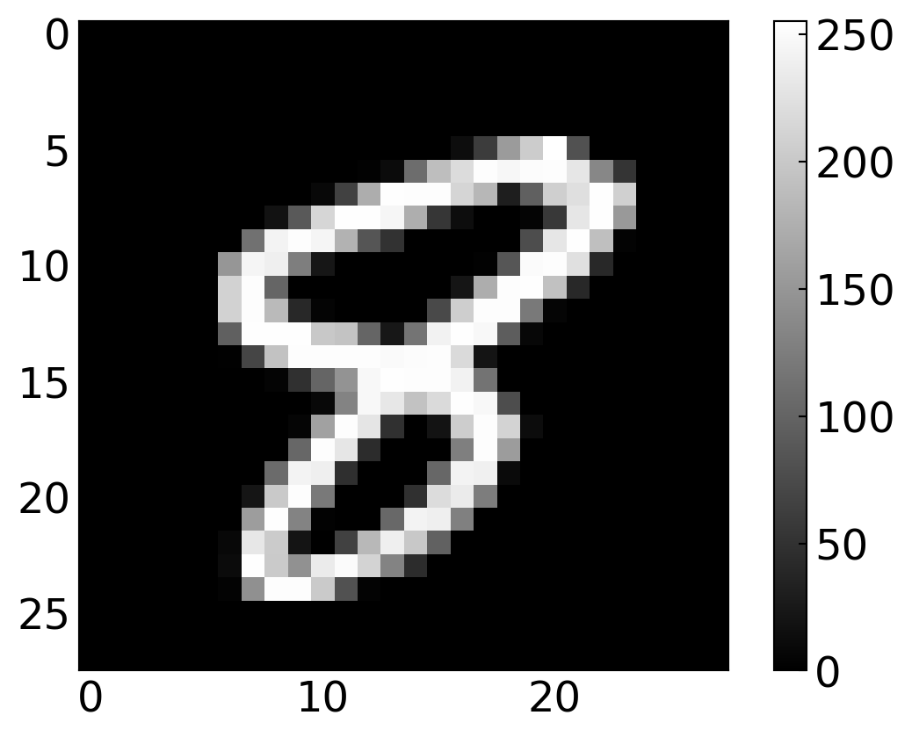
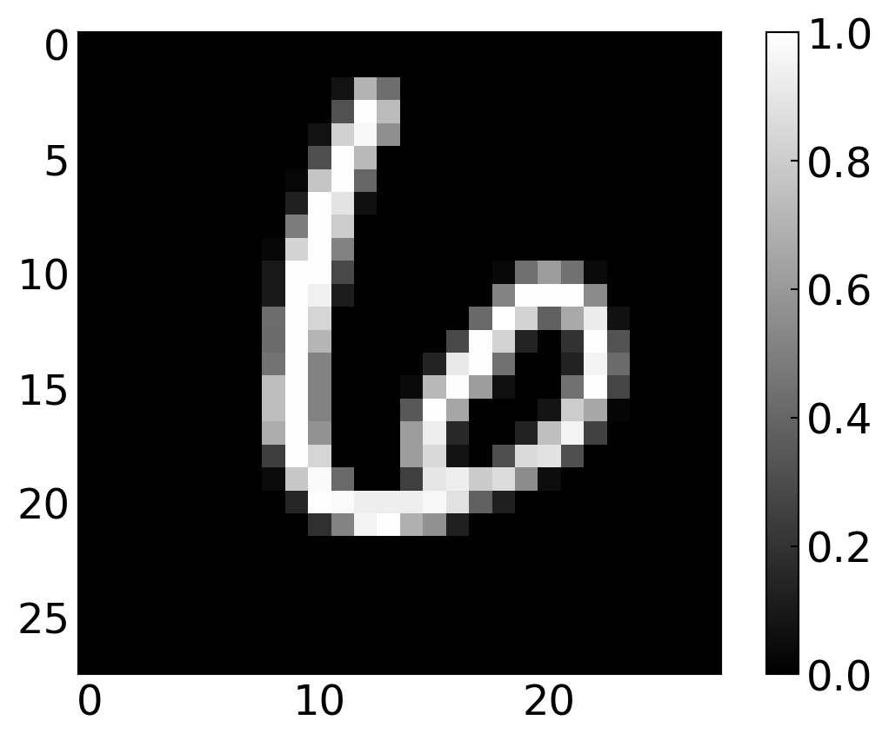
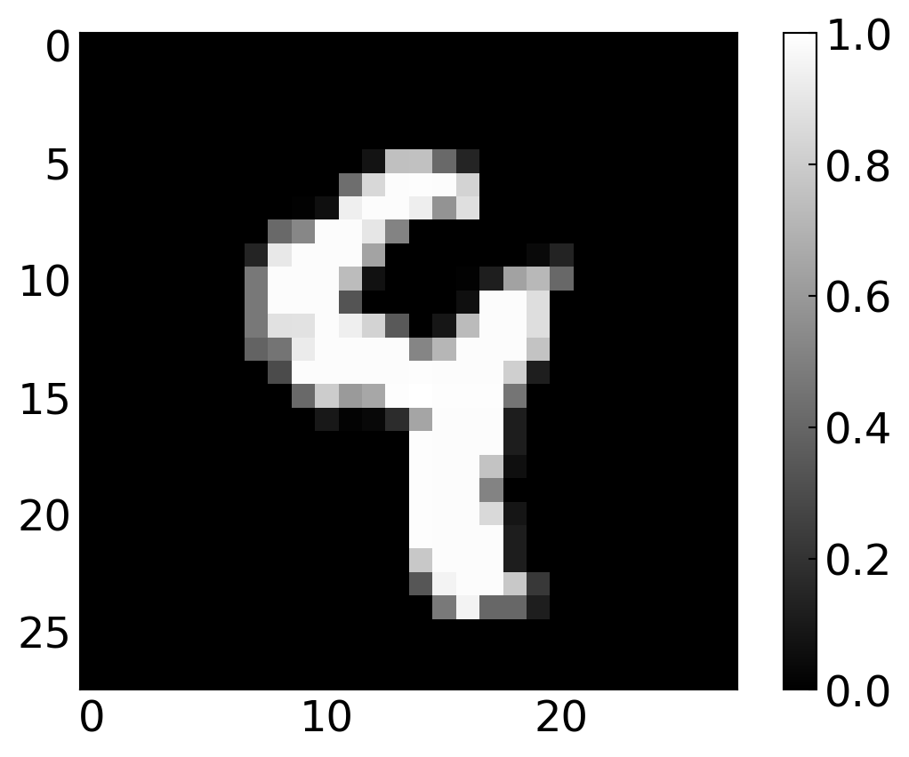

import numpy as np
import matplotlib.pyplot as plt
%matplotlib inline
%config InlineBackend.figure_format = 'retina'
plt.rcParams.update({'font.size': 18,
'axes.titlesize': 20,
'axes.labelsize': 20,
'axes.labelpad': 1,
'lines.linewidth': 2,
'lines.markersize': 10,
'xtick.labelsize' : 18,
'ytick.labelsize' : 18,
'xtick.top' : True,
'xtick.direction' : 'in',
'ytick.right' : True,
'ytick.direction' : 'in'
})Neural Networks
Neural networks have become one of the most powerful tools in modern computational science, with applications ranging from particle physics to materials science. The term deep neural networks refers to architectures with many layers of interconnected neurons, where “deep” simply indicates the number of these layers. But what makes these systems particularly fascinating for physicists is their ability to learn complex patterns from data—much like how we extract physical laws from experimental observations.
In this lecture, we’ll build neural networks from scratch, gaining deep insight into their inner workings rather than treating them as black boxes. We won’t rely on high-level libraries like TensorFlow or Keras just yet; instead, we’ll construct everything using NumPy, giving you the same kind of fundamental understanding you’d gain from deriving equations of motion from first principles rather than just applying them. This hands-on approach will help you understand what’s really happening under the hood when you train a neural network.
Think of neural networks as complex function approximators. Just as you might fit a polynomial to experimental data, neural networks can approximate incredibly complicated functions—functions that might describe the relationship between input images and their classifications, or between system parameters and physical outcomes. The difference is that neural networks can handle much higher-dimensional spaces and more complex patterns than traditional fitting methods.
Our goal today is to build a neural network that can recognize handwritten digits—a classic problem that will teach us all the essential concepts. We’ll start simple with a single neuron (essentially logistic regression), then add hidden layers to increase the network’s representational power. By the end, you’ll have a working digit classifier and a solid foundation for understanding deep learning. This notebook has been largely developed by Martin Fränzl and adapted for physics students.
Overview: Building Intelligence from Scratch 🧠
We’re going to build a neural network from scratch using Python and NumPy, without relying on high-level libraries like Keras or TensorFlow (those will come in Part 2). Our task is to recognize handwritten digits using the famous MNIST dataset—a benchmark problem in machine learning that has driven much of the field’s development.

Our learning journey proceeds in three stages, each building on the previous one. We’ll start with the simplest possible “network”: a single neuron that learns to recognize just the digit 0. This is actually just logistic regression in disguise, but it will teach us the fundamental concepts of forward propagation, loss functions, and gradient descent. Think of this as the “harmonic oscillator” of neural networks—the simplest non-trivial system that captures the essential physics.
Next, we’ll add a hidden layer to our network, still focusing on recognizing zeros. This is where things get interesting: the hidden layer allows the network to learn intermediate representations, much like how eigenstates provide a natural basis for describing quantum systems. The network can now discover its own “features” rather than working directly with raw pixel values.
Finally, we’ll extend our network to recognize all digits from 0 through 9, creating a true multiclass classifier. This requires changing our output layer and loss function, but the core principles remain the same. By the end, we’ll have a network that achieves around 84-92% accuracy—not state-of-the-art by modern standards, but impressive for a network we built entirely from scratch!
The MNIST Data Set 🔢
The MNIST (Modified National Institute of Standards and Technology) dataset is to machine learning what the hydrogen atom is to quantum mechanics—a fundamental system that everyone studies first. It contains 70,000 images of handwritten digits, each 28 × 28 pixels in grayscale with pixel values ranging from 0 (black) to 255 (white). This gives us 784 input features per image (28 × 28 = 784), each representing the intensity of one pixel.
From a physicist’s perspective, each image is a point in a 784-dimensional space. Our task is to partition this space into 10 regions, one for each digit. This is a classification problem, and neural networks provide a flexible way to learn these complex decision boundaries. We could download and preprocess the data ourselves, but the sklearn module has already done the heavy lifting for us:
Load the data
from sklearn.datasets import fetch_openml
X, y = fetch_openml('mnist_784', version=1, return_X_y=True,as_frame=False)The images are now contained in the array X, while the labels (so which number it is) are contained in y. Let’s have a look at a random image and label.
i = 33419
plt.imshow(np.array(X)[i].reshape(28, 28), cmap='gray')
plt.colorbar()
plt.show()
print('label: ',y[i])
label: 8Normalize the data
Normalization is a crucial preprocessing step in machine learning. By dividing by 255, we scale all pixel values to the interval [0, 1]. This normalization serves several purposes: it prevents numerical overflow issues during computation, helps the gradient descent algorithm converge faster (since all features are on the same scale), and makes the learning rate easier to tune. Think of it as choosing appropriate units in physics—working in natural units (ℏ = c = 1) often simplifies calculations, and similarly, normalized data simplifies neural network training.
X = X/255Preparing training and testing data
For our first network, we’re building a binary classifier—a system that answers a yes/no question: “Is this digit a zero?” The default MNIST labels indicate which digit each image represents (‘0’, ‘1’, ‘2’, etc.), but we need to convert this to binary labels: 1 if the image shows a zero, and 0 otherwise. This is analogous to simplifying a complex quantum system by projecting it onto a two-level system—we’re reducing a 10-class problem to a binary one.
y_new = np.zeros(y.shape)
y_new[np.where(y == '0')[0]] = 1
y = y_newWe now split the data into training and testing sets. This separation is crucial: we train on one set and evaluate on a completely different set to test our network’s ability to generalize. This is similar to how you might measure a physical quantity multiple times—some measurements are used to calibrate your instrument (training), while others test its accuracy (testing). The MNIST images are pre-arranged so that the first 60,000 form the training set and the last 10,000 serve as the test set. We’ll also transpose the data so that each example becomes a column rather than a row, which makes our matrix operations more intuitive:
m = 60000
m_test = X.shape[0] - m
X_train, X_test = X[:m].T, X[m:].T
y_train, y_test = y[:m].reshape(1,m), y[m:].reshape(1, m_test)Finally, we shuffle the training set. Shuffling ensures that our network doesn’t learn any spurious patterns related to the order of examples. If all the zeros came first, followed by all the ones, the network might learn temporal patterns that don’t actually exist in the data:
np.random.seed(1)
shuffle_index = np.random.permutation(m)
X_train, y_train = X_train[:,shuffle_index], y_train[:,shuffle_index]Let’s verify our preprocessing by examining a random image and its label:
i = 39
plt.imshow(X_train[:,i].reshape(28, 28), cmap='gray')
plt.colorbar()
plt.show()
print(y_train[:,i])
[0.]Try changing the index i to explore different images. When you find a zero, verify that the corresponding label is 1, and when you find any other digit, check that the label is 0. This sanity check ensures our binary labeling worked correctly.
A Single Neuron: The Fundamental Building Block ⚛️
The basic unit of a neural network is an artificial neuron, inspired by biological neurons but mathematically much simpler. A neuron takes multiple inputs, performs a weighted sum (plus a bias), and passes the result through an activation function to produce a single output. The diagram below shows a simple neuron with two inputs:

While the biological inspiration is interesting, it’s more useful for us as physicists to think of a neuron as a parametrized nonlinear function. The weights and bias are parameters we’ll adjust during training, and the activation function introduces nonlinearity—crucial because linear combinations of linear functions are still linear, but we need nonlinearity to approximate complex decision boundaries.
Forward Propagation: From Input to Output
The term “forward propagation” describes how information flows through the network from inputs to outputs. A neuron performs three sequential operations on its inputs.
First, each input value \(x_i\) is multiplied by its corresponding weight \(w_i\): \[\begin{eqnarray} x_{1}\rightarrow x_{1} w_{1}\\ x_{2}\rightarrow x_{2} w_{2} \end{eqnarray}\]
These weights determine how much influence each input has on the output. In physics terms, think of the weights as coupling constants that determine the strength of interaction between input features and the output.
Second, all weighted inputs are summed and a bias term \(b\) is added: \[\begin{equation} z = x_{1} w_{1}+ x_{2} w_{2}+b \end{equation}\]
The bias allows the neuron to shift its activation threshold, similar to how an external potential can shift energy levels in quantum mechanics. It’s crucial for fitting data that doesn’t pass through the origin.
Third, this weighted sum \(z\) is passed through an activation function \(\sigma(\cdot)\) to produce the final output: \[\begin{equation} y=\sigma(z) = \sigma( x_{1} w_{1}+ x_{2} w_{2}+b) \end{equation}\]
The activation function serves a critical purpose: it introduces nonlinearity into the network. Without it, stacking multiple layers would be pointless—any composition of linear transformations is itself linear. The activation function allows neural networks to approximate arbitrary nonlinear functions, much like how Fourier series can approximate arbitrary periodic functions through combinations of sines and cosines.
A commonly used activation function is the sigmoid function, which smoothly maps any real number to the interval (0, 1).
For a single training example \(x\) (which is itself a vector of 784 pixel values), we can write this more compactly using vector notation:
\[\begin{equation*} \hat{y} = \sigma(w^{\rm T} x + b)\ . \end{equation*}\]
Here \(w^{\rm T} x\) is the dot product of the weight vector with the input vector, \(b\) is a scalar bias, and \(\sigma\) is the sigmoid activation function: \[\begin{equation*} \sigma(z) = \frac{1}{1+{\rm e}^{-z}}\ . \end{equation*}\]
The sigmoid function has a beautiful S-shaped curve. For large positive inputs it approaches 1, for large negative inputs it approaches 0, and it transitions smoothly in between. This makes it perfect for binary classification—we can interpret the output as a probability. Interestingly, the sigmoid function is related to the Fermi-Dirac distribution in statistical mechanics (without the temperature parameter), which describes the occupation probability of quantum states.
Let’s define and visualize the sigmoid function:
def sigmoid(z):
return 1/(1 + np.exp(-z))x=np.linspace(-5,5,100)
plt.figure(figsize=(5,3))
plt.plot(x,sigmoid(x))
plt.xlabel('input')
plt.ylabel('output')
plt.grid()
plt.show()
Example calculation: Consider a simple two-input neuron with weights \(w=[0,1]\) and bias \(b=4\). If we provide the input \(x=[2,3]\), the neuron computes:
\[\begin{equation} z = w\cdot x+b = 0 \cdot 2 + 1 \cdot 3 + 4 = 7 \end{equation}\]
Passing this through the sigmoid gives: \[\begin{equation} y=\sigma(7) = \frac{1}{1+e^{-7}} \approx 0.999 \end{equation}\]
The output is very close to 1, indicating high confidence. This entire procedure—propagating input values forward through the network to obtain an output—is called feedforward or forward propagation.
Our immediate goal is to scale this up: we’ll create a network with a single neuron that has 784 inputs (one for each pixel in our 28 × 28 images) and produces a single sigmoid output indicating whether the image is a zero.
Vectorization for efficiency: The real power of NumPy comes from vectorization—processing multiple examples simultaneously. Instead of computing predictions one image at a time, we’ll stack all training examples side-by-side in a matrix \(X\), where each column is one example. The forward pass then becomes:
\[\begin{equation*} \hat{Y} = \sigma(w^{\rm T} X + b)\ . \end{equation*}\]
Note that \(\hat{Y}\) is now a vector (one prediction per training example), not a scalar. This vectorized computation is orders of magnitude faster than looping over examples individually—NumPy uses optimized linear algebra libraries (BLAS/LAPACK) under the hood, similar to how you’d use optimized FFT routines rather than implementing Fourier transforms naively.
In our code, we’ll compute this in two stages: first Z = np.matmul(W.T, X) + b (the weighted sum), then A = sigmoid(Z) (the activation). We use A for “Activation” to match standard deep learning notation. This two-stage breakdown might seem unnecessary now, but it will make our backward propagation code clearer—each stage needs its own gradient computation.
Loss Function: Quantifying Prediction Error 📉
Now that we can make predictions, we need to quantify how wrong those predictions are. This quantification is called the loss (or cost) function. It’s analogous to defining an energy functional in variational methods—we need a scalar quantity to minimize.
You might think to use mean squared error (MSE) from your curve-fitting experience:
\[\begin{equation} MSE(y,\hat{y})=\frac{1}{n}\sum_{i=1}^{n}(y-\hat{y})^2 \end{equation}\]
where \(\hat{y}\) represents our predictions and \(y\) represents the ground truth (actual labels from the training set). MSE works, but for classification problems, there’s a more principled choice.
We’ll use binary cross-entropy loss, which comes from information theory. For a single training example:
\[\begin{equation*} L(y,\hat{y}) = -y\log(\hat{y})-(1-y)\log(1-\hat{y})\ . \end{equation*}\]
This formula might look strange at first, but it has a beautiful interpretation. When \(y=1\) (the image is a zero), only the first term matters, and we’re penalized more heavily the further \(\hat{y}\) is from 1. When \(y=0\) (not a zero), only the second term matters, penalizing predictions far from 0. The logarithm ensures that the penalty grows rapidly as predictions become more confident but wrong—being confidently wrong is much worse than being tentatively wrong.
This loss function derives from maximum likelihood estimation and is related to the Kullback-Leibler divergence between probability distributions. It’s the natural choice for binary classification with sigmoid outputs. For physicists, you might recognize similar logarithmic terms in the partition function of statistical mechanics.
Averaging over a training set of \(m\) examples:
\[\begin{equation*} L(Y,\hat{Y}) = -\frac{1}{m}\sum_{i = 0}^{m}y^{(i)}\log(\hat{y}^{(i)})-(1-y^{(i)})\log(1-\hat{y}^{(i)})\ . \end{equation*}\]
In Python code, this looks like
def compute_loss(Y, Y_hat):
m = Y.shape[1]
L = -(1./m)*(np.sum(np.multiply(np.log(Y_hat), Y)) + np.sum(np.multiply(np.log(1 - Y_hat), (1 - Y))))
return LTraining the Network: Learning from Data 🎓
Training a neural network means adjusting its parameters (weights and biases) to minimize the loss function. This is fundamentally an optimization problem, not unlike minimizing the action in Lagrangian mechanics or finding ground state energies in quantum systems. The key difference is that our loss function lives in a very high-dimensional space—with 784 inputs, we have 784 weights plus 1 bias, giving us a 785-dimensional parameter space to navigate.
The optimization technique we’ll use is called gradient descent—we follow the downhill direction of the loss function, taking small steps toward the minimum. But how do we find this direction? We need gradients, which means we need derivatives of the loss with respect to all parameters. This is where backpropagation comes in.
Backward Propagation: The Chain Rule in Action 🔗
The output of our network depends entirely on the inputs (which are fixed for a given training example) and on the parameters we choose: the weights \(w\) and biases \(b\). We can therefore view the loss as a function of these parameters:
\[ L(w_{1},w_{2},w_{3},\ldots ,b_{1},b_{2},b_{3},\ldots) \]
To train the network through gradient descent, we need to know how the loss changes when we adjust each weight. This is captured by the partial derivative:
\[ \frac{\partial L}{\partial w_j} \]
This derivative tells us the direction and magnitude of steepest increase in the loss. By moving in the opposite direction (negative gradient), we can reduce the loss. The process of computing these gradients by working backward from the loss through the network is called backpropagation—it’s just a clever application of the chain rule from calculus, applied systematically to a computational graph.
Backpropagation is often presented as mysterious or complicated, but it’s really just careful bookkeeping with derivatives. As physicists, you’ve used the chain rule countless times—backpropagation is the same principle, just applied to a more complex composite function.
Deriving the gradients
Let’s focus on a single training example to keep the math clear. We can think of computing the loss in three stages: \(w_j\rightarrow z \rightarrow \hat{y} \rightarrow L\). The formulas for these stages are: \[\begin{align*} z &= w^{\rm T} x + b\ , \\ \hat{y} &= \sigma(z)\ , \\ L(y,\hat{y}) &= -y\log(\hat{y})-(1-y)\log(1-\hat{y})\ . \end{align*}\]
By the chain rule from calculus, the gradient of the loss with respect to weight \(w_j\) factors into three partial derivatives:
\[\begin{align*} \frac{\partial L}{\partial w_j} = \frac{\partial L}{\partial \hat{y}}\frac{\partial \hat{y}}{\partial z}\frac{\partial z}{\partial w_j} \end{align*}\]
This factorization is the essence of backpropagation. Each partial derivative corresponds to one “link” in our computational chain. Let’s compute each factor systematically. The derivatives are a bit tedious to write out, but none of them are particularly complicated—they’re all applications of basic calculus rules you already know.
\(\partial L/\partial\hat{y}\): \[\begin{align*} \frac{\partial L}{\partial\hat{y}} &= \frac{\partial}{\partial\hat{y}}\left(-y\log(\hat{y})-(1-y)\log(1-\hat{y})\right) \\ &= -y\frac{\partial}{\partial\hat{y}}\log(\hat{y})-(1-y)\frac{\partial}{\partial\hat{y}}\log(1-\hat{y}) \\ &= -\frac{y}{\hat{y}} +\frac{(1 - y)}{1-\hat{y}} \\ &= \frac{\hat{y} - y}{\hat{y}(1-\hat{y})} \end{align*}\]
\(\partial \hat{y}/\partial z\): \[\begin{align*} \frac{\partial }{\partial z}\sigma(z) &= \frac{\partial }{\partial z}\left(\frac{1}{1 + {\rm e}^{-z}}\right) \\ &= \frac{1}{(1 + {\rm e}^{-z})^2}\frac{\partial }{\partial z}(1 + {\rm e}^{-z}) \\ &= \frac{{\rm e}^{-z}}{(1 + {\rm e}^{-z})^2} \\ &= \frac{1}{1 + {\rm e}^{-z}}\frac{{\rm e}^{-z}}{1 + {\rm e}^{-z}} \\ &= \frac{1}{1 + {\rm e}^{-z}}\left(1 - \frac{1}{1 + {\rm e}^{-z}}\right) \\ &= \sigma(z)(1-\sigma(z)) \\ &= \hat{y}(1-\hat{y}) \end{align*}\]
\(\partial z/\partial w_j\): \[\begin{align*} \frac{\partial }{\partial w_j}(w^{\rm T} x + b) &= \frac{\partial }{\partial w_j}(w_0x_0 + \dots + w_nx_n + b) \\ &= x_j \end{align*}\]
Substituting back into the chain rule yields: \[\begin{align*} \frac{\partial L}{\partial w_j} &= \frac{\partial L}{\partial \hat{y}}\frac{\partial \hat{y}}{\partial z}\frac{\partial z}{\partial w_j} \\ &= \frac{\hat{y} - y}{\hat{y}(1-\hat{y})}\hat{y}(1-\hat{y}) x_j \\ &= (\hat{y} - y)x_j\ . \end{align*}\]
which does not look that unfriendly anymore.
Vectorizing the gradients: When we have \(m\) training examples processed simultaneously, the weight gradient becomes: \[\begin{align*} \frac{\partial L}{\partial w} = \frac{1}{m} X(\hat{Y} - Y)^{\rm T}\ . \end{align*}\]
The factor of \(1/m\) comes from averaging the loss over all examples. Notice how clean this is: the gradient is simply the input matrix multiplied by the error vector \((\hat{Y} - Y)\).
A similar derivation for the bias gradient yields, for a single example: \[\begin{align*} \frac{\partial L}{\partial b} = (\hat{y} - y)\ . \end{align*}\]
Vectorized over \(m\) examples: \[\begin{align*} \frac{\partial L}{\partial b} = \frac{1}{m}\sum_{i=1}^{m}{(\hat{y}^{(i)} - y^{(i)})}\ . \end{align*}\]
In our code, we’ll follow the convention of labeling gradients with a d prefix: dW for \(\partial L/\partial W\) and db for \(\partial L/\partial b\). This notation reminds us that these are derivatives. The backpropagation step then consists of just two lines: dW = (1/m) * np.matmul(X, (A-Y).T) and db = (1/m)*np.sum(A-Y, axis=1, keepdims=True).
Gradient Descent: Following the Downhill Path ⛰️
We now have all the ingredients needed to train our neural network! The optimization algorithm we’ll use is called gradient descent—conceptually simple but remarkably effective. The update rule for weights is:
\[ w\leftarrow w-\eta\frac{\partial L}{\partial w} \]
Here \(\eta\) (Greek letter eta) is the learning rate, a hyperparameter that controls the step size. Think of gradient descent as navigating down a mountain in fog: the gradient tells you which direction is downhill, and the learning rate determines how big a step you take.
The logic is straightforward. If \(\partial L/\partial w\) is positive, the loss increases as \(w\) increases, so we should decrease \(w\) to reduce the loss. If \(\partial L/\partial w\) is negative, the loss decreases as \(w\) increases, so we should increase \(w\). The gradient descent update automatically does the right thing in both cases.
The identical update rule applies to the bias: \(b\leftarrow b-\eta\frac{\partial L}{\partial b}\).
We repeat this update process many times—each complete pass through all training data is called an epoch. This is analogous to iterative methods you might have encountered in computational physics, like the relaxation method for solving Laplace’s equation or the power method for finding eigenvectors. We start with a random guess and iteratively improve it until convergence.
The term “stochastic” gradient descent (SGD) actually refers to a variant where we don’t use all training examples at once but rather small random batches. For our purposes, we’ll compute gradients using the full training set each iteration, which is sometimes called batch gradient descent. This is more stable but slower for large datasets.
Build and Train: Putting It All Together 🔨
Now comes the exciting moment—assembling all our components into a working neural network! Let’s review what we have: a forward propagation function (computing predictions), a loss function (measuring error), and backpropagation (computing gradients). The training loop combines these pieces iteratively to learn optimal weights.
Here’s our complete training procedure for a single-neuron network recognizing zeros:
This architecture is actually equivalent to logistic regression—the sigmoid function is called a “logistic” function, hence the name. Despite its simplicity, logistic regression is quite powerful and forms the foundation for more complex networks.
learning_rate = 1
X = np.array(X_train)
Y = np.array(y_train)
n_x = X.shape[0]
m = X.shape[1]
W = np.random.randn(n_x, 1) * 0.01
b = np.zeros((1, 1))
for i in range(200):
Z = np.matmul(W.T, X) + b
A = sigmoid(Z)
loss = compute_loss(Y, A)
dW = (1/m)*np.matmul(X, (A-Y).T)
db = (1/m)*np.sum(A-Y, axis=1, keepdims=True)
W = W - learning_rate * dW
b = b - learning_rate * db
if i % 10 == 0:
print("Epoch", i, " loss: ", loss)
print("Final loss:", loss)Epoch 0 loss: 0.7471125121616977
Epoch 10 loss: 0.07308269582929021
Epoch 20 loss: 0.06131832354627721
Epoch 30 loss: 0.05523011981200572
Epoch 40 loss: 0.0513243202361425
Epoch 50 loss: 0.04854004196371184
Epoch 60 loss: 0.04642485272904433
Epoch 70 loss: 0.04474722082574825
Epoch 80 loss: 0.043374333931969114
Epoch 90 loss: 0.04222371551840797
Epoch 100 loss: 0.04124104599832092
Epoch 110 loss: 0.04038888651110667
Epoch 120 loss: 0.03964048057966332
Epoch 130 loss: 0.0389761317586134
Epoch 140 loss: 0.038380979206568466
Epoch 150 loss: 0.03784357458020544
Epoch 160 loss: 0.03735493964481513
Epoch 170 loss: 0.03690792357698068
Epoch 180 loss: 0.03649675336766015
Epoch 190 loss: 0.036116712255247
Final loss: 0.03579805734492837Watching the loss decrease is encouraging—it means our network is learning! But how do we judge its actual performance? The loss function tells us about training progress, but what we really care about is classification accuracy on unseen data.
To evaluate our network properly, we’ll use the confusion matrix—a fundamental tool in classification that shows not just whether predictions are right or wrong, but specifically how they’re wrong. The confusion matrix displays actual labels in the rows and predicted labels in the columns, giving us a complete picture of our classifier’s behavior.

Understanding the confusion matrix is crucial. True positives (TP) are zeros correctly identified as zeros. False positives (FP) are other digits incorrectly classified as zeros. False negatives (FN) are zeros that we missed (classified as “not zero”). True negatives (TN) are other digits correctly identified as not-zeros.
From these four quantities, we can derive useful metrics. Precision = TP/(TP+FP) tells us what fraction of predicted zeros are actually zeros. Recall = TP/(TP+FN) tells us what fraction of actual zeros we successfully identified. Accuracy = (TP+TN)/(TP+TN+FP+FN) tells us the overall fraction of correct predictions.
Fortunately, sklearn provides functions to compute all of this automatically. We just need to supply predictions and actual labels. Crucially, we evaluate on the test set X_test—data the network has never seen during training. This tests generalization, not memorization.
from sklearn.metrics import confusion_matrix, classification_report
Z = np.matmul(W.T,X_test) + b
A = sigmoid(Z)
predictions = (A>.5)[0,:]
labels = (y_test == 1)[0,:]
print(confusion_matrix(predictions, labels))[[8973 33]
[ 47 947]]print(classification_report(predictions, labels)) precision recall f1-score support
False 0.99 1.00 1.00 9006
True 0.97 0.95 0.96 994
accuracy 0.99 10000
macro avg 0.98 0.97 0.98 10000
weighted avg 0.99 0.99 0.99 10000
Testing Our Model: Individual Predictions 🔬
Beyond aggregate statistics, it’s instructive to examine individual predictions. We can test our network on a single image and see what it predicts. Since sigmoid outputs range from 0 to 1, we use 0.5 as our decision threshold—outputs above 0.5 are classified as zeros, below 0.5 as not-zeros. This threshold could be adjusted to trade off precision versus recall, but 0.5 is the natural choice for balanced classes.
i=200
bool(sigmoid(np.matmul(W.T, np.array(X_test)[:,i])+b)>0.5)Falseplt.imshow(np.array(X_test)[:,i].reshape(28,28),cmap='gray')

Multiclass Network: Recognizing All Digits 🔢
Our binary classifier successfully distinguishes zeros from non-zeros, but the real challenge is recognizing all ten digits (0-9). This requires extending to multiclass classification—instead of a yes/no question, we’re asking “which of these 10 categories?”
The key architectural change is replacing our single output neuron with 10 output neurons, one per digit class. Each neuron produces a score for its corresponding digit. We then interpret these scores as probabilities—the neuron with the highest score determines our prediction.
This is analogous to expanding from a two-state quantum system (like spin-½) to a ten-state system—we need ten basis states to represent all possibilities. The output layer produces a probability distribution over these ten states.
For example, the output array [0,1,0,0,0,0,0,0,0,0] would indicate the network predicts digit 1 (the second position, using zero-indexing). In practice, the outputs won’t be exactly 0 and 1, but rather probabilities that sum to 1. The predicted class is simply the position of the maximum value.
To train a multiclass network, we need to reload the original MNIST labels (not our binary 0/1 encoding):
from sklearn.datasets import fetch_openml
X, y = fetch_openml('mnist_784', version=1, return_X_y=True,as_frame=False)
X = X / 255We’ll convert these labels to one-hot encoding—a representation where each label becomes a vector of length 10 with a single 1 and nine 0s. The digit “3” becomes [0,0,0,1,0,0,0,0,0,0], for instance. This encoding matches our network’s output format and makes the loss calculation straightforward. The result is a 10 × 70,000 array where each column is one training example’s label:
digits = 10
examples = y.shape[0]
y = y.reshape(1, examples)
Y_new = np.eye(digits)[y.astype('int32')]
Y_new = Y_new.T.reshape(digits, examples)Y_new.shape(10, 70000)We also separate into training and testing sets, maintaining the same 60,000/10,000 split:
m = 60000
m_test = X.shape[0] - m
X_train, X_test = X[:m].T, X[m:].T
Y_train, Y_test = Y_new[:,:m], Y_new[:,m:]
shuffle_index = np.random.permutation(m)
X_train, Y_train = X_train[:, shuffle_index], Y_train[:, shuffle_index]i = 58
plt.imshow(X_train[:,i].reshape(28,28), cmap='gray')
plt.colorbar()
plt.show()
Y_train[:,i]
array([0., 0., 0., 0., 0., 0., 0., 0., 0., 1.])Changes to the Model Architecture 🔧
Let’s systematically examine what changes are required to extend our binary classifier to multiclass. The input and hidden layers remain unchanged—they still extract useful features. Only the output layer and loss function need modification.
Forward Pass: The Softmax Function
The critical change is in the output layer. Instead of a single sigmoid unit, we now have 10 units with a softmax activation function. Softmax generalizes sigmoid to multiple classes—it converts a vector of arbitrary real numbers (the logits \(z\)) into a probability distribution that sums to 1.
The softmax function computes the activation for each output unit \(i\) as: \[\begin{align*} \sigma(z)_i = \frac{{\rm e}^{z_i}}{\sum_{j=0}^9{\rm e}^{z_i}}\ . \end{align*}\]
The exponential ensures all outputs are positive, and the normalization ensures they sum to 1, giving us a valid probability distribution. Units with larger logits \(z_i\) get exponentially larger probabilities—the softmax is “soft” because it doesn’t simply pick the maximum but gives a smooth distribution.
In vectorized NumPy code: A2 = np.exp(Z2) / np.sum(np.exp(Z2), axis=0). The axis=0 parameter ensures we normalize each example independently (summing down columns, not across the entire matrix).
Loss Function: Categorical Cross-Entropy
With multiple classes, we need to generalize our loss function. The categorical cross-entropy extends binary cross-entropy to \(n\) classes. For a single training example: \[\begin{align*} L(y,\hat{y}) = -\sum_{i=0}^n y_i\log(\hat{y}_i)\ . \end{align*}\] This is the negative log-probability assigned to the correct class. Since the labels are one-hot encoded, only one term in the sum is nonzero (the term corresponding to the true class). This means we’re minimizing the negative log-likelihood—maximizing the probability assigned to the correct class.
From a physics perspective, this is deeply connected to statistical mechanics. The cross-entropy loss is equivalent to minimizing the Kullback-Leibler divergence between the true distribution (the one-hot labels) and the predicted distribution (softmax outputs). It’s the information-theoretic measure of how well our predictions match reality.
Averaging over \(m\) training examples: \[\begin{align*} L(y,\hat{y}) = -\frac{1}{m}\sum_{j=0}^m\sum_{i=0}^n y_i^{(i)}\log(\hat{y}_i^{(i)})\ . \end{align*}\]
So let’s define:
def compute_multiclass_loss(Y, Y_hat):
L_sum = np.sum(np.multiply(Y, np.log(Y_hat)))
m = Y.shape[1]
L = -(1/m) * L_sum
return LBackpropagation: A Fortunate Simplification
Here’s a beautiful mathematical result: despite the complexity of the softmax function, the gradient simplifies dramatically. When we combine softmax activation with cross-entropy loss, the derivative of the loss with respect to the logits (the \(z\) values) is simply: \[\begin{align*} \frac{\partial L}{\partial z_i} = \hat{y}_i - y_i\ . \end{align*}\]
This is exactly the same form we had with sigmoid and binary cross-entropy! The predicted probabilities minus the true labels. This isn’t a coincidence—it reflects the principled connection between exponential family distributions and their conjugate loss functions. The mathematical elegance here is reminiscent of how the Hamiltonian and Lagrangian formulations of mechanics lead to equivalent equations of motion.
We won’t walk through the full derivation (it requires careful application of the chain rule with matrix derivatives), but trust that this simple gradient makes implementation straightforward.
Build and Train: The Complete Network 🚀
Now we assemble our final, full-featured digit classifier. With more parameters (now around 50,000) and a more complex task (10 classes instead of 2), training will take longer. We’ll run 200 epochs to give the network sufficient time to learn the patterns distinguishing all ten digits.
The architecture is: 784 inputs → 64 hidden units (sigmoid) → 10 outputs (softmax). Watch how the loss decreases as training progresses—you’re witnessing the network discover representations of handwritten digits!
n_x = X_train.shape[0]
n_h = 64
learning_rate = 1
W1 = np.random.randn(n_h, n_x)
b1 = np.zeros((n_h, 1))
W2 = np.random.randn(digits, n_h)
b2 = np.zeros((digits, 1))
X = X_train
Y = Y_train
for i in range(200):
Z1 = np.matmul(W1,X) + b1
A1 = sigmoid(Z1)
Z2 = np.matmul(W2,A1) + b2
A2 = np.exp(Z2) / np.sum(np.exp(Z2), axis=0)
loss = compute_multiclass_loss(Y, A2)
dZ2 = A2-Y
dW2 = (1./m) * np.matmul(dZ2, A1.T)
db2 = (1./m) * np.sum(dZ2, axis=1, keepdims=True)
dA1 = np.matmul(W2.T, dZ2)
dZ1 = dA1 * sigmoid(Z1) * (1 - sigmoid(Z1))
dW1 = (1./m) * np.matmul(dZ1, X.T)
db1 = (1./m) * np.sum(dZ1, axis=1, keepdims=True)
W2 = W2 - learning_rate * dW2
b2 = b2 - learning_rate * db2
W1 = W1 - learning_rate * dW1
b1 = b1 - learning_rate * db1
if (i % 10 == 0):
print("Epoch", i, "loss: ", loss)
print("Final loss:", loss)Epoch 0 loss: 9.359409945262723
Epoch 10 loss: 2.480915410750769
Epoch 20 loss: 1.674432764227767
Epoch 30 loss: 1.3330104308788548
Epoch 40 loss: 1.1447842302497118
Epoch 50 loss: 1.0230964725181804
Epoch 60 loss: 0.9368747323694273
Epoch 70 loss: 0.871957389404843
Epoch 80 loss: 0.8208795576102073
Epoch 90 loss: 0.7793325725168161
Epoch 100 loss: 0.7446649543545801
Epoch 110 loss: 0.7151537041535516
Epoch 120 loss: 0.6896258244540621
Epoch 130 loss: 0.6672519100025255
Epoch 140 loss: 0.6474268213495038
Epoch 150 loss: 0.6296970416913454
Epoch 160 loss: 0.6137147676333653
Epoch 170 loss: 0.5992079750548168
Epoch 180 loss: 0.5859603076597457
Epoch 190 loss: 0.5737971945414019
Final loss: 0.5636592880338959Let’s see how we did:
Z1 = np.matmul(W1, X_test) + b1
A1 = sigmoid(Z1)
Z2 = np.matmul(W2, A1) + b2
A2 = np.exp(Z2) / np.sum(np.exp(Z2), axis=0)
predictions = np.argmax(A2, axis=0)
labels = np.argmax(Y_test, axis=0)Model Performance: Confusion Matrix Analysis 📊
Now for the moment of truth—how well does our network perform on unseen test data?
print(confusion_matrix(predictions, labels))
print(classification_report(predictions, labels))[[ 896 0 26 8 8 22 30 4 14 10]
[ 0 1076 15 6 2 7 3 6 14 2]
[ 14 13 815 30 10 13 23 33 24 13]
[ 10 12 47 820 4 60 5 18 40 17]
[ 0 1 17 0 790 22 30 17 14 106]
[ 27 4 7 56 5 669 23 6 58 16]
[ 13 5 30 7 23 28 822 0 21 1]
[ 6 2 18 25 12 10 3 866 18 37]
[ 12 22 47 42 19 44 16 15 739 28]
[ 2 0 10 16 109 17 3 63 32 779]]
precision recall f1-score support
0 0.91 0.88 0.90 1018
1 0.95 0.95 0.95 1131
2 0.79 0.82 0.81 988
3 0.81 0.79 0.80 1033
4 0.80 0.79 0.80 997
5 0.75 0.77 0.76 871
6 0.86 0.87 0.86 950
7 0.84 0.87 0.86 997
8 0.76 0.75 0.75 984
9 0.77 0.76 0.76 1031
accuracy 0.83 10000
macro avg 0.82 0.83 0.82 10000
weighted avg 0.83 0.83 0.83 10000
We achieve approximately 84% accuracy across all ten digits—not bad for a network we built entirely from scratch! Modern state-of-the-art methods using convolutional neural networks reach 99%+ accuracy, but our simple fully-connected network demonstrates the fundamental principles.
Looking at the confusion matrix and classification report, you can see which digits are hardest to distinguish. Often, 4s and 9s are confused, or 3s and 5s—even humans sometimes struggle with these pairs in badly written examples. The confusion matrix gives insight into the network’s systematic errors, which could guide improvements.
Testing the Model: Interactive Exploration 🔍
Let’s test our trained network on individual examples to get an intuitive feel for its predictions:
i=2003
plt.imshow(X_test[:,i].reshape(28,28), cmap='gray')
predictions[i]np.int64(5)
Try changing the index i to explore different test images. Compare the network’s predictions with what you see. When does it make mistakes? Are the errors understandable? This kind of error analysis is crucial in practical machine learning—understanding failure modes helps you improve your models.
Reflection and Next Steps 🎯
Congratulations! You’ve built a complete neural network from scratch and trained it to recognize handwritten digits with reasonable accuracy. More importantly, you understand every component: forward propagation (matrix multiplications and activations), loss functions (quantifying error), backpropagation (computing gradients via chain rule), and gradient descent (iterative optimization).
Key Insights for Physicists: The mathematical tools we used—linear algebra, calculus, and optimization—are the same ones you use throughout physics. Neural networks are fundamentally just differentiable programs that we optimize. The loss landscape we navigate with gradient descent is analogous to potential energy surfaces in molecular dynamics or action functionals in field theory.
What We Built: Our final network has ~50,000 parameters organized into two layers. It processes 784-dimensional input vectors (flattened images) through learned transformations to produce 10-dimensional output probability distributions. Training involved computing gradients for all 50,000 parameters on 60,000 examples, iterating 200 times—about 600 million gradient computations in total, all completed in seconds thanks to vectorized NumPy operations.
Limitations and Improvements: Our network treats pixels as independent features, ignoring spatial structure. Convolutional neural networks (CNNs) exploit the 2D structure of images, achieving much better performance. We also used a fixed learning rate and simple gradient descent; modern optimizers like Adam adapt the learning rate automatically. And we’ve barely scratched the surface of architecture design—depth, width, activation functions, regularization, and many other choices affect performance.
In the Next Seminar: We’ll explore high-level frameworks like TensorFlow and PyTorch that make building and training complex networks much easier. We’ll also see how to apply these techniques to physics problems—from analyzing experimental data to solving differential equations with neural networks. The principles remain the same; the tools just become more powerful.
Final Thought: Machine learning is rapidly transforming physics research. From discovering new particles in collider data to controlling quantum systems to simulating complex materials, neural networks are becoming as essential as Fourier transforms or numerical integration. By understanding these tools at a fundamental level, you’re well-prepared to apply them creatively in your own research. ```